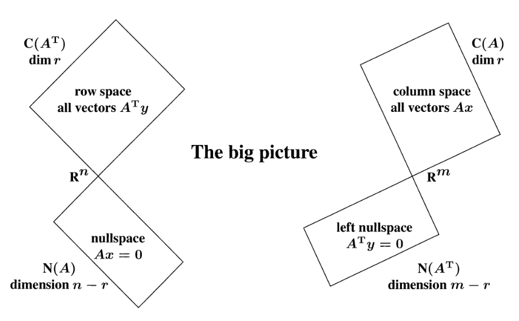

6 Subespacios principales de una matriz
Una matriz \(A_{m\times n}\) crea cuatro subespacios importantes, como los podemos mostrar en la siguiente figura. (Aquí se puede encontrar màs inforacion del tema)

Llamaremos \(C(A)\) como el espacio columna de la matriz \(A\) y \(N(A)\) como el espacio nulo de la matriz de \(A\). De aquì podemos observar las siguientes propiedades
\[C(A^T)\perp N(A).\] Para mostrar esta proiedad debemos mostrar que si \(x_1\in C(A^T)\) y \(x_2\in N(A)\), entonces
\[\langle x_1,x_2\rangle=x_2^Tx_1=0.\]
Sabemos que existe un \(y\in \mathbb{R}^m\), note que lo podemos descomponer en \(y=y_1+y_2\), donde \(y_1\in C(A)\) y \(y_2\in N(A^T)\) luego \[A^Ty=A^T(y_1+y_2)=A^ty_1=x_1.\]
Ahora tenemos que
\[\langle x_2,x_1\rangle=(A^Ty)^Tx_2=y^TAx_2=0,\] por tanto son ortogonales. Con un argumento similar podemos mostrar que \(C(A)\perp N(A^T)\).
Ademas tenemos la propiedad que \[dim(C(A))=dim(N(A^T))=r,\] de esta forma tenemos que \(dim(N(A))=n-r\) y \(dim(N(A^T))=m-r\).
Algunas propiedades importantes del rank son las siguientes
Si \(A\) es una matriz cuadrada y \(rank(A)=n\) entonces todos autovalores de \(A\) son distintos de cero.
Si \(A\) es una matriz cuadrada entonces \(rank(A)=n\) si y solo si \(A\) es invertible.
Para demostrar la primera vamos a suponer que es falso por tanto 0 es un autovalor luego \(Ax=0\), lo que implica que \(N(A)\neq\emptyset\), esto contradice el hecho que \(rank(A)=dim(C(A^T))=dim(C(A))=n\). Ahora, si \(A\) tiene todos los autovalores diferentes de cero entonces \(A\) es invertible, por lo tanto \(rank(A)=n\).
- Si \(A\) una matriz de \(m\times n\), con \(m>n\) entonces \(A^TA\) es invertible.
Sea \(x\in \mathbb{R}^n\) entonces \(Ax=y\neq 0\) puesto que \(rank(A)=n,\) entonces \(y\notin N(A^T)\). De esta forma existe un \(x\neq 0\) tal que \(x=A^Ty\) y que \(x\in C(A^T)\) y \(x\neq 0\). Para completar la demostración debemos debemos mostrar que \(dim(Im(A^TA))=n\).
Para esto vamos a usar la propiedad que \(rank(A)=n\) y \(rank(A^T)=n\). Entonces tenemos que \(rank(A^TA)=n\) y por lo tanto \(A^TA\) es invertible.